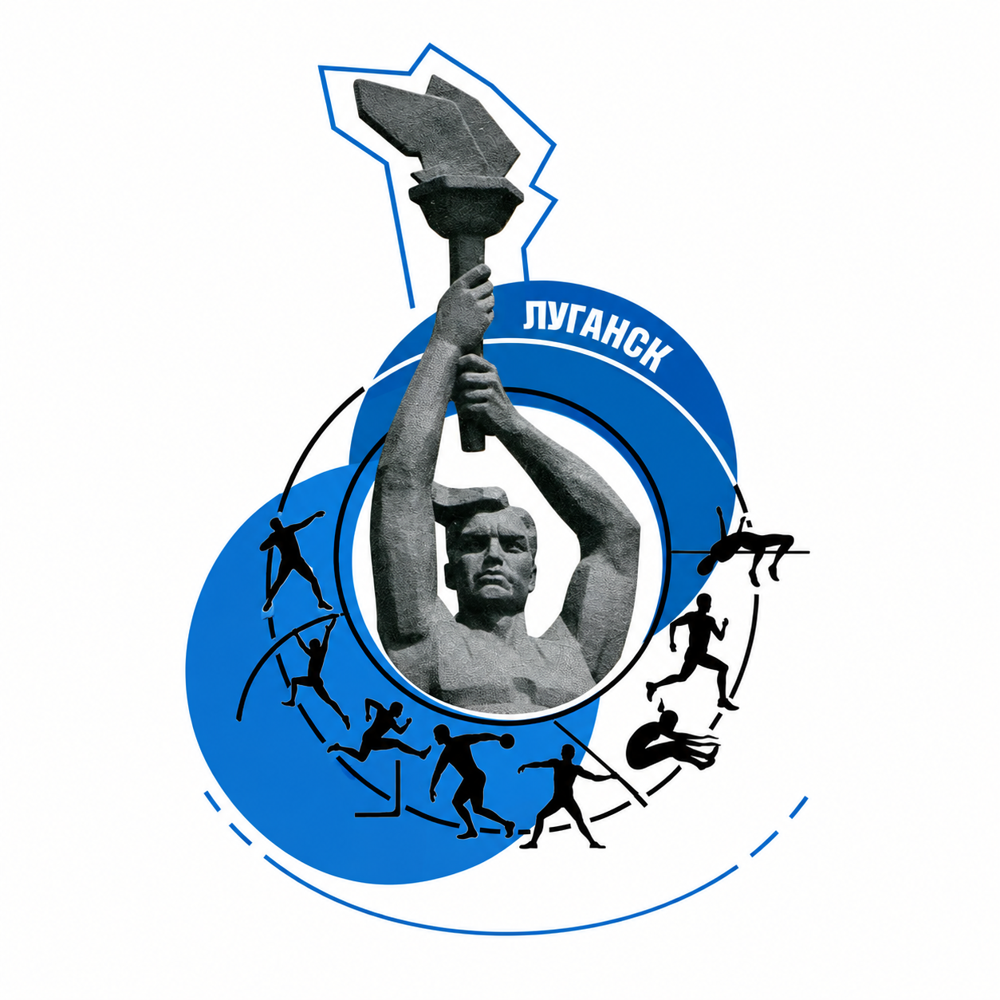

ЦИФРОВАЯ ПЛОЩАДКА ЛЁГКОЙ АТЛЕТИКИ
Каждый старт
имеет значение.
Календарь местных и выездных соревнований и ссылки на документы — для спортсменов, тренеров и организаторов.

От плана к результату
Информация о стартах собрана в одном месте.
Календарный план ↗
Местные старты из плана ЛНР и предложения по выездным соревнованиям на 2026 год.
Открыть календарь02Подготовка к старту ↗
Сверяйте даты, программу и условия участия с документами организатора.
Открыть документы03Проверенные итоги ↗
Протоколы и результаты появятся в карточках после сверки с первоисточником.
Смотреть протоколыКалендарь стартов
26 местных стартов и предложения по выездам из предоставленных таблиц. Выберите дату, чтобы открыть соревнование. Сроки и участие уточняйте у организаторов.
Соревнования
Листайте карточки горизонтально или воспользуйтесь стрелками. Прошедшая дата не подтверждает проведение старта.
Выездные соревнования
Выезды перенесены из предоставленной таблицы предложений. Даты включают дни приезда и отъезда; предложение не подтверждает поездку, состав или результат.
Перед заявкой сверяйте дату и программу на официальном календаре ВФЛА ↗.
Карточки тренеров
Демонстрационные карточки показывают формат будущего справочника. Реальные заявки пока не передаются администратору: очередь работает лишь в этом браузере.
Имена и сведения ниже вымышлены и не являются рекомендацией или подтверждением квалификации конкретных людей. До подключения сервера не вводите реальные персональные данные.
Объявления и каналы
Подписывайтесь на официальный канал на удобной платформе. Повторяющиеся публикации из Telegram и MAX здесь не дублируются.
Протоколы и положения
Список рабочих PDF-документов по стартам 2025–2026 годов. Названия взяты из имён файлов; места в рейтинге считаются только по итоговым таблицам.
Рабочие PDF-файлы находятся у владельца проекта и ещё не размещены в публичной папке. Карточки показывают источник и статус проверки, но не заменяют официальный документ.
Топ‑5 по итоговым таблицам
Считаем каждое 1-е место победой, места 1–3 — призовыми. Учитываются отдельные дисциплины и итоговая таблица многоборья. Порядок: сначала число побед, затем призовых мест. Разряд указан по строкам протоколов и не означает официальное присвоение.
Источники — предоставленные владельцем рабочие PDF (названия указаны в разделе протоколов). Подсчёт требует проверки по опубликованным версиям перед официальным использованием.
Понятно представителю.
Удобно организатору.
Демонстрационная версия показывает сценарии работы. Подача настоящих заявок и хранение персональных данных здесь отключены.
Наверх ↑